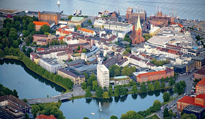
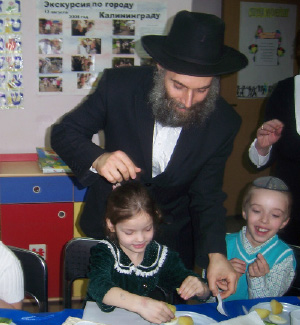
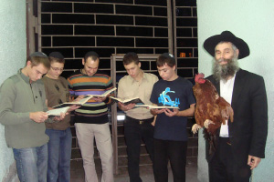

Russian Jewish Revival in the Center of German Enlightenment
It was a long journey that Rabbi David Shvedik had to take until he reached a life of Torah and mitzvos. A meeting with a shliach is what set him off him in a new direction. He later went on shlichus himself, to Kaliningrad, formerly Konigsberg, a center for Haskala. He is gathering neshamos, one by one, and making a difference in the lives of many young people.

Kaliningrad is a small Russian enclave on the Baltic Sea, between Poland in the south, Lithuania in the east and north, and the sea in the west. The name Kaliningrad was given to the city in 1948 after the Russians conquered the city from the Germans who called it Konigsberg.
The Russian residents were brought to Kaliningrad by Stalin after World War II, most of them forcibly, after the Germans were expelled. Many of those who were expelled were Jewish survivors of the war. Among the residents sent to the city by the Russian government were many Jews who were not religious. Needless to say, under the communists there was no possibility that they would develop a Jewish community. For fifty years and more, until the shliach R’ David Shvedik arrived, there was not a single minyan in the city, not even on the Yomim Nora’im.
THE SAD HISTORY OF KALININGRAD
The first Jewish presence in the city appeared over three hundred years ago. Konigsberg was known as a German cultural center. The burgeoning cultural atmosphere is what led to the city becoming a center of Jewish culture. Quite a few of the Jewish residents attended the local university and absorbed the German cultural influence so that the majority of the Jews were not observant and were adherents of the Haskala movement.
Many businesses were under Jewish ownership, including a large print house. The famous Jewish printer, Yosel Moshe Solomon, studied printing. Many holy books were printed in Konigsberg, including s’farim from the early days of the Chassidic movement. In Chassidic lore, the story is told of the Alter Rebbe sending emissaries to the city in order to consult with an usher in a theater there, before the Tanya was printed. It turned out that the man was a hidden tzaddik.
One of the famous rabbanim in Konigsberg was Rabbi Yisroel of Salant, who was the rav from 5617/1857. On his initiative, the journal Tevuna was printed which contained chiddushei Torah and Musar. After a break of a number of years, he returned to the city in 5642/1882. In the winter of 5643, he took sick and he passed away on Erev Shabbos 25 Shvat of that year and was buried in Konigsberg.
The last rav of the city before the Holocaust was R’ Yosef Tzvi Dunner who immigrated to London and served there as Av Beis Din. His son, R’ Abba, was born in Konigsberg. In 5758/1998, when the shliach came, R’ Abba Dunner and his elderly father were among those who were present at his installation as rav.
As mentioned, the Haskala movement wreaked havoc among the Jews of the city and Konigsberg eventually became one of the Jewish centers for Haskala in Germany. They published a Hebrew publication called HaMe’asef.
With Hitler’s rise to power, the local Jewish community had to contend with a new reality. Nationalism and anti-Semitism had always been present, but now they intensified. On Kristalnacht, German hordes torched the five synagogues. They also destroyed the Jewish orphanage which was near one of the shuls.
After the Russian occupation, any remnant of Jewish history was erased except for the three cemeteries, mute testimony to the city’s flourishing Jewish past.
“In other cities in Russia, the shluchim had to work with those in power in order to get back the shuls that had been made into factories or auditoriums,” said R’ Shvedik. “Over here, since the shuls were completely destroyed, we had to start from the beginning.”
R’ Shvedik himself grew up in an assimilated family and later discovered his Jewish roots. He found a concentration of 2000 Jews in the city; about half of what there was before the war. “All the Jews who are here came after the war. Most of them are Jews who are already third generation non-observant. I had to pick up the pieces and start founding a community and institutions from the ground up.
“The work was hard but we were determined. Today, after fifteen years on shlichus, nothing is the same as it was. Jewish awareness is high. We have an active Chabad house with shiurim for all ages, Shabbos and Yom Tov meals and t’fillos on Mondays and Thursdays and Shabbos of course. We have dozens of youth who have made serious strides in their observance.”
CONSTANT SEARCHING
Before discussing the shlichus, I wanted to hear R’ Shvedik’s story. His life story can definitely explain his outstanding success in shlichus.
R’ Shvedik was born in Rostov. His family did not even observe Pesach and Yom Kippur. They were days like any others. “Ironically, the ones who informed me of Jewishness were classmates who taunted me for being Jewish. I had no idea what being Jewish meant, but I knew that I had to hide this fact and that it was not a source of pride.”
He was a star pupil. He loved to read and was excellent in sports. “From a very young age I felt I was being watched over by a higher power. As opposed to the heretical and atheistic education that our teachers tried to instill in us, I felt Divine Providence many times in my life and realized that there was a Power who was with me. At a young age I wondered where He was and how to connect to Him, but I did not know how to obtain a satisfying answer.”
When he was 27, after earning degrees in highway engineering, he married a local gentile woman whom he knew from school.
“Marriage deepened my inner hunger for G-dliness. One day, I registered for a course in yoga. In addition to the exercises, the teachers also taught Eastern philosophy. The title of the course was fascinating and I hoped to find the answers to my questions. But I did not. My inner hunger had been sated for a few months but I quickly realized that the answers were not satisfying.”
R’ Shvedik says that throughout this time he had no idea what Judaism was and how a Jew can express his Judaism.
“I read many philosophies but the answers were only temporarily satisfying and I was soon feeling that I had to search further. One day, upon the advice of a good friend, I decided to check out Christianity. I went into a church and hoped to find what I was seeking. The ceremonies were impressive but as the days passed, I had more and more questions. The stories that I heard did not sound rational to me. I discovered tremendous superficiality. When I asked questions, I was told it was forbidden to ask. The priest, who heard my questions, was furious. I realized that someone who is angered by questions has not made peace with his chosen path.
“The priest, who heard my questions, was furious. I realized that someone who is angered by questions has not made peace with his chosen path.
“I kept searching. The one that Heaven sent to extricate me was my cousin to whom I told about my search. He told me that the place for a Jew seeking spirituality is a synagogue. I was such an ignoramus that I didn’t even know what he was talking about.”
This cousin was about to make aliya and he would visit the shul in Rostov in order to learn Hebrew. “One Erev Shabbos, I went to the shul where I met many young people my age who were singing and dancing. It was a pleasant atmosphere. Then there was a hush and in walked a distinguished looking man. He was R’ Sholom Ber Stambler. He addressed us saying, ‘To be a Jew is not to enjoy Jewish folklore but to learn Torah.’ I was fascinated by what he said and that very day I arranged to learn with him.
“I mainly learned Chumash with him and he provided a clear explanation as to the significance of being a Jew. Within a week I felt that I had found what I had been looking for. I felt relieved and calm. I felt like someone who finds an oasis in the desert. I had sensed all along that there is a Creator, but R’ Stambler taught me how to serve Him. I came to the realization that I could no longer continue living with a non-Jew and I informed her of this.
“She, who had been a partner to my spiritual searching, immediately told me that she wanted to convert. At that point, we had to part ways. She went to Moscow to a Jewish seminary where she studied for several years, and I went to Eretz Yisroel. I lived in Nachalat Har Chabad where I eventually studied sh’chita. I had an eleven year old daughter. I sent her to study in Moscow in the hopes that she would also want to convert.”
In Nachalat Har Chabad, he spent time with people like R’ Sholom Dovber Garelik and R’ Yaakov Tzirkus, from whom he learned much about the ways of Chassidim. “I loved the Chassidic atmosphere there. I would spend every Shabbos with a different family and I learned much from all of them.
“While I was in Eretz Yisroel, my wife completed her conversion. I returned to Moscow and we married properly, according to Jewish law. We were determined to go on shlichus, for it was only thanks to the Rebbe’s shluchim that I had discovered my own Judaism. I identified deeply with them and wanted to be a shliach too, so that I could help other Jews discover their roots.”
THE NADVORNA REBBE: “YOU ARE A LUBAVITCHER”
Upon consulting with the chief rabbi of Russia, R’ Berel Lazar, it was decided that the Shvedik family would go to Kaliningrad. Within a short time, the couple was on their way while their daughter remained in Moscow. As she got older without completing the conversion process, R’ Shvedik prayed that she would go through with it. Whenever she spoke about pursuing academic studies, he worried that she would choose another path in life, would marry a gentile, and he would have gentile grandchildren.
“We experienced an outstanding miracle with this daughter. Not a day passes that I don’t thank Hashem for this miracle He performed for us,” he says emotionally.
“While I was still in Eretz Yisroel, I went to B’nei Brak to visit a close friend from Rostov. He had also become observant through R’ Stambler and when he made aliya he became a devoted Nadvorner Chassid. When I was in his home, he offered to arrange a meeting with the Nadvorner Rebbe (author of Be’er Yaakov) and I agreed.
“I told him my life story and asked him what to do with my daughter. Should I pressure her to convert or not discuss it at all and let things take their course? The Admur told me, ‘You are a Chassid of the Lubavitcher Rebbe. You will see that the Rebbe won’t abandon you and things will work out.’ And that’s exactly what happened.
“We were already established in our place of shlichus when my daughter turned seventeen. She was in her final year of studies at the Jewish school. She did not tell us anything about her future plans, which made me very concerned. One fine day, I received a call from Moscow and was told about a prominent Jew from Antwerp who was looking into a shidduch suggestion for his son and my daughter. It seems the son himself served as a rabbi in Antwerp. When I heard this, I did not know whether to laugh or to cry. ‘Go look for a Jewish girl,’ I said sadly.
“But the man was persistent. He said that his son heard good things about my daughter and was quite serious about this shidduch. Having no choice, we arranged that on my visit to Moscow the following week, we would meet. When I arrived in Moscow I found out that my daughter, even before hearing about the shidduch, had decided to complete the conversion process. By Divine Providence, a pair of rabbanim who were experts in conversions had arrived in Moscow. While they were there, they took care of my daughter’s conversion too.
“I looked into the shidduch. The couple met a few times and decided to marry. The parents came from Belgium and we had an engagement party. I asked the father how it happened that he came to Russia to find a shidduch for his son. It seems the Rebbe himself guided him to Russia. When his son was ready to get married, his father wrote to the Rebbe through the Igros Kodesh. The answer he opened to directed him to Russia. He simply bought a ticket and took a flight to Moscow.
“The wedding took place in Antwerp. My son-in-law, Yosef Dagan, is involved in kiruv and works as a jeweler. We have four dear grandchildren who are going in the ways of Hashem and from whom we have much nachas.
“When I think about this, I cannot help but remember what the Nadvorna Rebbe said to me: ‘You are a Lubavitcher and the Rebbe will take care of you.’ Those words often echo in my head. Things could have gone differently. Fortunate are we to be Chassidim and belong to the Rebbe’s army of shluchim.”
ALL THE WAY TO THE KREMLIN
5758/1998 is when the Shvedik couple arrived in Kaliningrad, a spiritual wasteland:
“We arrived in a city where the people did not know what Judaism is. The first year was hard. Today, looking back, I don’t know how we managed. There was no Jewish awareness in the city whatsoever and Jews had not gathered together here for many years.
“We decided to focus our efforts on the youth. We started classes targeting them and many young people began visiting the Chabad house every day to put on t’fillin, to hear Divrei Torah and to be connected. There are quite a few who put t’fillin on at home now and regularly attend the minyanim. When we arrived here, not a single person put on t’fillin.”
One of the first projects that caused quite a commotion and was covered by all the media was the inauguration ceremony, appointing R’ Shvedik as the rav of the district. The previous rav of the city, R’ Yosef Tzvi Dunner, came from England with his son, the European President of Agudas Yisroel.
“At the inauguration, R’ Dunner said he had been the only Orthodox rabbi of the city, because he had agreed to serve as rav only after they removed the organ that was played on Shabbos during the davening. He also said that before the Germans burned the shuls of the city, they brought him to watch this horrifying sight. Then he was arrested along with the community’s leaders. One of them, who was very distant from Jewish observance, asked him, ‘Tell me, how is it that the Germans are doing such an abomination when I know German history even better than they!’ R’ Dunner replied, ‘You forgot that you are a Jew but these cursed ones, the descendants of Eisav, have not forgotten your Jewishness.’”
Aside from the Dunners, other rabbanim from all over Europe came to the ceremony. They all sensed how Judaism was going to be revived in this city.
One of the difficult things the shliach had to contend with in the beginning was the anti-Semitism, which is planted deep within the citizenry. In one of his first years in Kaliningrad, one of the Jewish cemeteries was desecrated with Nazi epithets written on the gravestones. A memorial to those murdered in the Holocaust was also defaced. This aroused a huge firestorm; in the end, the hoodlums who did it were arrested.
“One day, I heard that the city had started digging in the area of the Jewish cemetery, which is near the market. The plan was to build a new neighborhood there. When I arrived there, I was horrified. Bones of the deceased were strewn about in disgrace. I spoke to the mayor but he said that there are old cemeteries throughout the city and he had to develop the city. When I saw that he was inflexible, we raised a hue and cry. I got many people involved including the chief rabbi R’ Lazar, who involved the president at the time, Dmitri Medvedev.
“At the weekly meeting that Medvedev held with his cabinet ministers in the Kremlin, he began by grimly asking: Is there anti-Semitism in Kaliningrad?
“This was publicized in the media and it was enough of a hint to the mayor who stopped the desecration immediately. He called me for a meeting and informed me that from now on, there would be no digging at Jewish cemeteries. All digging in the area, from then on, would require permission from the rav of the city.”
DRASTIC CHANGES AMONG THE YOUTH

In Kaliningrad there are dozens of young people who discovered their Judaism and began committing to mitzvos to one degree or another.
“When the school closed, I sent some of the students who were already more committed to learn in Petersburg. There was a girl whom we sent there, but after a while, she had a spiritual decline until she left the school and switched to a non-Jewish school. She also stopped participating in the Chabad house’s activities and I was very worried about her.
“Pesach by us is something grand. I rent a big hall and then have a Seder at home where many mekuravim join us. When the Seder in the hall was over and I was on my way home, I met the girl who was hanging out with gentile friends. I invited her to be our guest. She hesitated but then left her friends and came along with me. I gave her special attention and from then on, she began coming to the Chabad house again. Within a few weeks, she had made a significant change. She left her gentile friends and decided she was going to become a religiously observant Jew.
“There was a Jewish young man who had a gentile girlfriend. She loved coming to the shul and every Erev Shabbos she would come to the shul while he, the Jew, waited outside for her. One time, she managed to convince him to come in and he was hooked. He became a regular at the shul while she stopped coming. In a conversation that I had with him after some time, he shared his thoughts with me. He said he had thought we were fanatics, which is why, at first, he was afraid to enter the shul.
“That year, this young man was circumcised, he met a Jewish girl, and they married and have a little girl.”
R’ Shvedik is constantly amazed by the sacrifice of these young boys and girls who are a third generation uneducated in Torah and mitzvos. Now they are making huge changes in their lives.
“There is a young man who lived in Eretz Yisroel for a few years and even served in the army but ended up returning to Kaliningrad. He regularly attends shiurim, and when we brought a mohel to the city, he asked to be circumcised. Since we needed proof that he is Jewish, he went that same morning to a village in search of the birth certificate of his maternal grandmother which said she was Jewish. He came back a few minutes before sunset and had his bris.”
When telling the following story, R’ Shvedik laughed out loud:
“There was a girl in our school in the first grade. Her mother was Jewish and her father was not, as is common in Russia. One not-so fine day, her paternal grandmother said that she wanted the little girl to learn about Christianity too and insisted on taking her to church.
“The girl went along and was given a lit candle by the priest, which she held like the other children did. At her first opportunity, when she stood next to the microphone, she began to innocently recite the brachos for lighting the menorah. Her gentile grandmother wanted to bury herself in shame and vowed never to bring her granddaughter to church again!”
SOUL STORIES

“During Chanuka, aside from the public events, I try to visit lonely Jews and light the menorah and bring them joy. Last year, I went to visit someone and a very old man opened the door. When he heard that I am a Chabad Chassid, he burst into heartrending tears. When he calmed down a bit, he lit the menorah and then told me that he had grown up in a Lubavitcher home. During the war, he ended up in the Glubokoe ghetto in White Russia (now Belarus). He said that when it was Chanuka, he lit the menorah along with other Jews and our lighting reminded him of those dark days. He was saved after he made a run for it during an aktion, and the bullets that were fired in his direction did not find their mark. He said that he remembered the Rebbe Rayatz who had stayed in Warsaw before the war. He described how he had come with a horse and wagon to the city and strong bachurim had unhitched the horses and carried the Rebbe’s wagon themselves.”
Before telling the following story, R’ Shvedik sighed.
“Before Pesach one year, I submitted a request to the prison commander to be able to hang a sign in the prison corridors that said that any Jew who wanted shmura matza could get it from me. I received phone calls from some inmates. A few days before Yom Tov, I arrived with Pesach provisions and matzos and I explained to the Jews there how to make a proper Seder.
“A few months later, the father of one of the inmates called me and said that his son had been released from jail because of an illness and he had died a short while later. Before he died, he told his family to give him a Jewish burial and made them swear that only R’ Shvedik would be involved in his burial. Of course, I acceded to his request and I was moved to see how this came about. This man’s parents were so distant from their Judaism that if he hadn’t asked this of them, he would have been buried among gentiles.
“We have a secretary in the community offices whose name is Katrina. Throughout the years, I knew her as a gentile. When we started a project geared towards university students at the Chabad house and many young Jews began coming, she spoke about this at home. Her mother told her offhandedly that Katrina’s grandmother, her mother, was Jewish. Katrina was surprised, since all her life she had thought of herself as a non-Jew. She sent a letter to the town where her grandmother lived and they sent her the documents which confirmed what her mother told her. From then on, instead of being the secretary for the student program, she herself became a student and made a commitment to grow in her observance.”
IN KALININGRAD EVERY SPARK TURNS INTO A FLAME
R’ Shvedik said, “I love Jews” several times during our conversation. He does everything with a distinctive joy and with a persistence suffused with tremendous Ahavas Yisroel and caring.
Lately, due to their geographic closeness to Poland, he began making Shabbatons for his mekuravim at the Chabad house in Cracow with the shliach, R’ Eliezer Gurary.
“People get a taste of a Chassidishe Shabbos from beginning to end, they taste the Shabbos foods and instead of using the elevator they use the stairs. All the Shabbos meals are uplifting and I see the participants coming back to Kaliningrad with a different perspective.”
What is it like to work in a place where Jews don’t even know the basics?
“When there is great darkness, then every spark is apparent from a distance. Lately, there are many Jews who are returning to Kaliningrad after spending some years in Eretz Yisroel. They simply did not feel in Eretz Yisroel what they felt here, since the surroundings in Eretz Yisroel are completely Jewish. We don’t have a shiur without at least twenty people!
“As for your question, in the past it was harder, but today Jewish life is developing nicely.”
Your family has grown; how will you provide them with a proper Jewish chinuch?
“I rely on the Rebbe who said that he takes responsibility for the children of the shluchim. It’s enough to see the miracle that Hashem did for me with my daughter from whom I have Chassidishe nachas along with her husband and children.
“We waited until my son was 17 and then I sent him to the mesivta in Moscow. The children are a big help and feel different from others. They feel it’s a privilege to be shluchim of the Rebbe. I learn Chassidus and Gemara with them every day.”
I’d like to ask you about Moshiach. How many people in Kaliningrad live with Moshiach?
“People in the community relate very much to the topic of Geula and Moshiach. I explain it like this: Everything in life that we do has a goal. The world is marvelously interconnected and harmonious, but what is the goal for this world? I tell them the answer. It’s because the Creator of this world is ultimate goodness and the ultimate benefactor, and that ultimate goodness will be revealed in full force with the true and complete Geula.
“The topic of Moshiach is emphasized at farbrengens and one-on-one discussions. People understand that without the Rebbe, who is the Moshiach of the generation, I would not be here. People here are intellectual by nature, which is why I explain the topic of Moshiach to them in a rational way. The Rebbe did the work for us and provided an answer to every possible question.
“The Jewish magnate, George Soros, came here recently and we met. One of his first questions was when will Moshiach come. I told him that Moshiach is already here and we just need to open our eyes and see him. He smiled and agreed. People in our generation definitely want Moshiach and are waiting for him to come.”
DONATION FROM AN UNEXPECTED SOURCE
R’ Shvedik concluded the interview with a story that happened just a few days earlier:
“I was driving somewhere when I was suddenly stopped by a policeman who searched my car. After ten minutes, he asked me, in case I hadn’t understood, for money for the search he had made. I asked him whether he knew who I was. He asked me who I am and I said I am the rabbi of the Jewish community and we run a large scale charity operation and so he ought to pay me.
“He was flabbergasted but recovered and asked, “How much?” I said, “At least 100 rubles.” He took out his wallet, took out the money, and gave it to me as a donation to the Chabad house.”
Speaking of contributions, R’ Shvedik would like to thank Mikhael Mirilashvili who is a great supporter of his work.
Nosson Avrohom. "Russian Jewish Revival in the Center of German Enlightenment." Beis Moshiach, no. 906 (December 9, 2013).